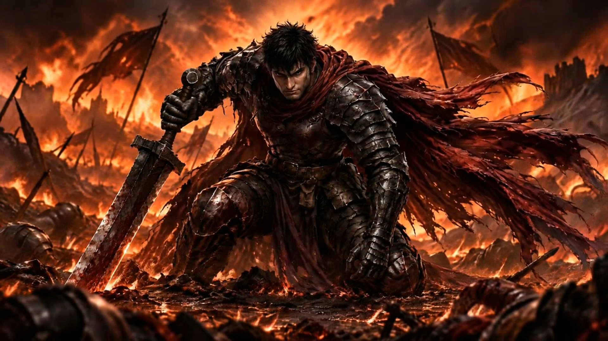

FOR DEAR GAMERS · EXODUSER공개 전 미리보기 · 미게시
CINEMATIC PRODUCTION NOTE
대검을 쥔 손부터 다시.
지옥에서 다시 일어선 전사. 첫 장면의 작은 어색함부터 다듬었습니다.

전사 인트로 첫 5초의 손과 칼자루 접촉을 수정했습니다.
손잡이를 감싼 손과 드러난 폼멜을 확인해 주세요.
손과 칼자루가 닿는 모습이 더 자연스럽게 읽히나요?
AI 보조 원화·영상·음향을 활용한 스토리 컷씬 제작 기록입니다.
인게임 화면이나 Steam 공개 데모 패치 안내는 아닙니다.